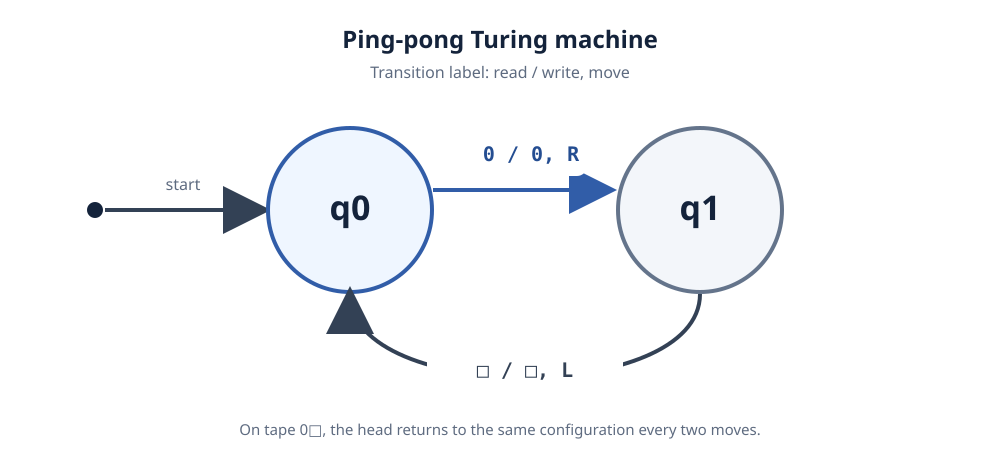

Two computation models
- Unbounded integers: values use ordinary mathematical integer arithmetic.
- Unsigned fixed-width: updates wrap modulo
2^bits; the demo supports 1–20 bits. - The same loop can halt under one model and loop under another.
Formal Language and Automata · Task 4
Explore how a small, proof-backed analyzer classifies constant-step loops—and why the answer depends on the computation model.
Use the supported three-line form shown below.
Grammar: x = n, then while x op b:, then one indented x += d or x -= d. Operators: <, <=, >, >=, ==, !=.
Each verdict is tied to the selected semantics.
Choose an example or enter a loop, then select Analyze loop.
An exact result for this restricted grammar is not a general solution to the halting problem.
A tiny machine whose deterministic computation repeats forever.

Figure. Starting with tape 0□ and the head on 0, the machine alternates between q0 and q1. The tape contents return to the same configuration after two moves, so it loops. Here □ denotes blank.
2^bits; the demo supports 1–20 bits.